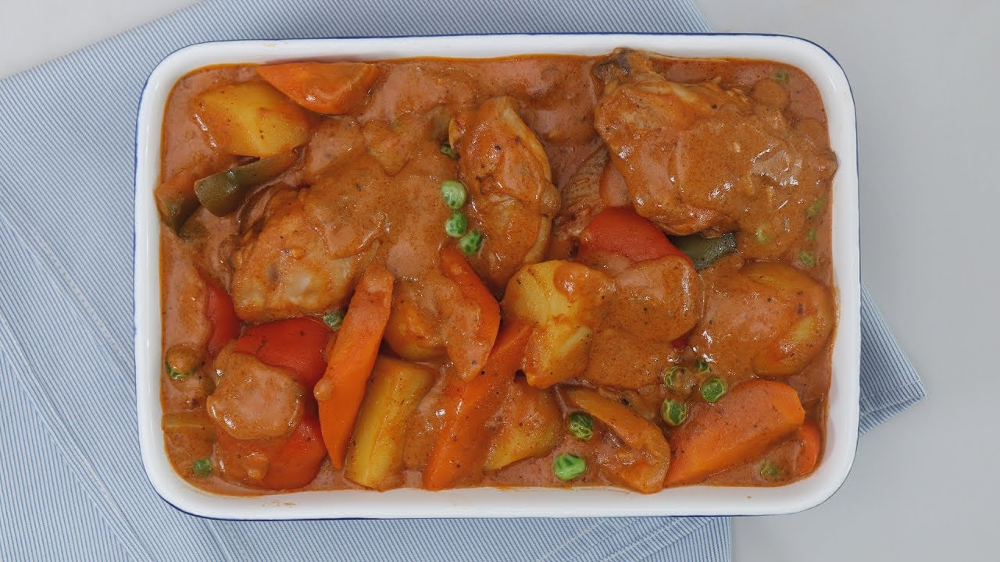

Kalderetang Manok

Description
Classic Filipino dish, great paired with freshly cooked rice and a bottle of Coca Cola by Jess Calape submitted in Based.cooking
Ingredients
- 1 lb of chicken
- 2 chopped potatoes
- 2 chopped carrots
- 1 chopped onion
- 2 chopped cloves of garlic
- 1 chopped tomato (optional)
- 3 cups of water
- Tomato sauce
- Chopped bell pepper
- Dried peas
- Liver spread
- Fish sauce
- Grated cheese
Steps
- Sauté onions, garlic and (optional) tomato, in a pan of olive oil.
- Put chicken and cook until brown, add 2 tablespoons of salt and pepper. (Note: Make sure the chicken is cook all the way through.)
- Add fish sauce before adding water and let the chicken boil for a few minutes and then add tomato sauce.
- Add potatoes, carrots, and liver spread. Mix the liver spread and let it boil until broth thickens, let it boil until carrots and potatoes are soft. Add more salt and pepper if needed.
- Add dried peas, bell pepper and grated cheese and let it cook for a minute.
- Cook until cheese melts before serving.
<-Back